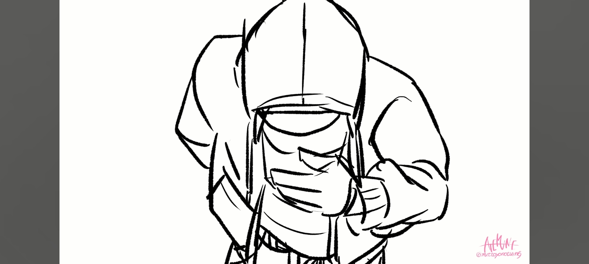

Chào mừng đến với Wiki!
Đây là trang chủ của wiki dành cho các Vũ trụ Thay thế (AU) của Undertale. Hãy khám phá các sáng tạo của cộng đồng!
AU Nổi bật: Dusttale
Dusttale (còn được gọi là Murder!Sans) là một AU nơi Sans, sau nhiều lần chứng kiến Cung đường Diệt chủng (Genocide Route), quyết định tự mình ra tay để ngăn chặn con người. Anh ấy bắt đầu giết các quái vật khác để thu thập LOVE và trở nên đủ mạnh mẽ...
Bạn có thể đọc thêm tại trang Dusttale.